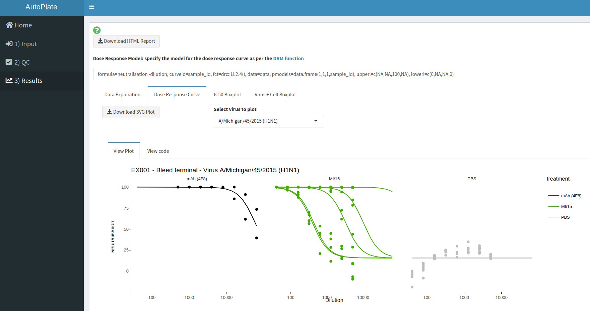

Introduction
AutoPlate is an R Shiny web application (and R library) that helps you automate the analysis of biological assays conducted on 96-well plates. It lets you go from raw data to publication ready figures in minutes!
Currently, the only supported assay type is the Pseudotype Micro Neutralisation (pMN) assay, for which dose-response curves can be fit. In the future, other assays such as ELLA, ELISA, HIA or even any custom assay may be supported. Let us know if there’s an assay that you would like us to support!
You can use AutoPlate in two ways:
- Web application - this is the easiest way to run AutoPlate!
- R library - you can just use the functions you need for your own analysis!
Check out the web application
Try out the app here: https://philpalmer.shinyapps.io/AutoPlate/
Currently the dashboard contains the following tabs and features, which allow you to run an analysis in three simple steps:
-
🏠 Home

The opening page gives an introduction to AutoPlate and contains useful links for support and this GitHub repository
-
➡️ 1) Input

Upload the raw plate readouts for your 96 well-plates and specify what each well contained in terms of dilutions, samples, types, bleed, treatment, virus and experiment ID
-
✔️ 2) Quality Control

Visualise the data you entered in step 1 and check that the controls have worked for each plate/well. If the controls have failed for any wells these can be excluded from the analysis
-
📈 3) Results 
Analyse the data and generate downloadable plots such as a Dose Response Curve
Run your own version of the web application
- Get the source code from GitHub:
- See
app.Rfor how you can run you own version of the app yourself locally
Once you’ve loaded the library you can run AutoPlate like so:
Using the R library
Installation
You can install the latest released version of autoplate from GitHub with:
# install.packages("devtools")
devtools::install_github("PhilPalmer/AutoPlate")Running your own analysis in R
AutoPlate was primarily built as a web app but most of the functionality can also be run within R, which may be useful if you want to customise an analysis.
Here is a basic example of how to plot a dose response curve from the data exported from AutoPlate:
1) Load your dataset
# Load an example dataset
data("pmn_platelist_H1N1_example_data")
data <- pmn_platelist_H1N1_example_data
# OR
# Load your own dataset - make sure your file path is correct!
platelist_file <- "data-raw/pmn_platelist_H1N1_example_data.csv"
data <- read.csv(platelist_file, header=TRUE, stringsAsFactors=FALSE, check.names=FALSE)2) Define the virus you want to plot
3) Preprocess your dataset to keep only the non-excluded, types and virus of interest:
4) Fit your dose-response model (DRM) using the DRC package:
model <- drc::drm(formula=neutralisation~dilution, curveid=sample_id, fct=drc::LL2.4(), data=data, pmodels=data.frame(1,1,1,sample_id), upperl=c(NA,NA,100,NA), lowerl=c(0,NA,NA,0))5) Plot your dose-response curve with AutoPlate and ggplot2 (Optional: make it intereactive with Plotly!)
drc_plot <- autoplate::plot_drc(data, model)
drc_plotly <- plotly::ggplotly(drc_plot)
#> Warning: `group_by_()` is deprecated as of dplyr 0.7.0.
#> Please use `group_by()` instead.
#> See vignette('programming') for more help
#> This warning is displayed once every 8 hours.
#> Call `lifecycle::last_warnings()` to see where this warning was generated.
print(drc_plot)
Credit
This app was built by @PhilPalmer while at the University of Cambridge Lab of Viral Zoonotics
Many thanks to others who have helped out along the way too, including (but not limited to): David Wells, George Carnell, Joanne Marie Del Rosario and Kelly da Costa